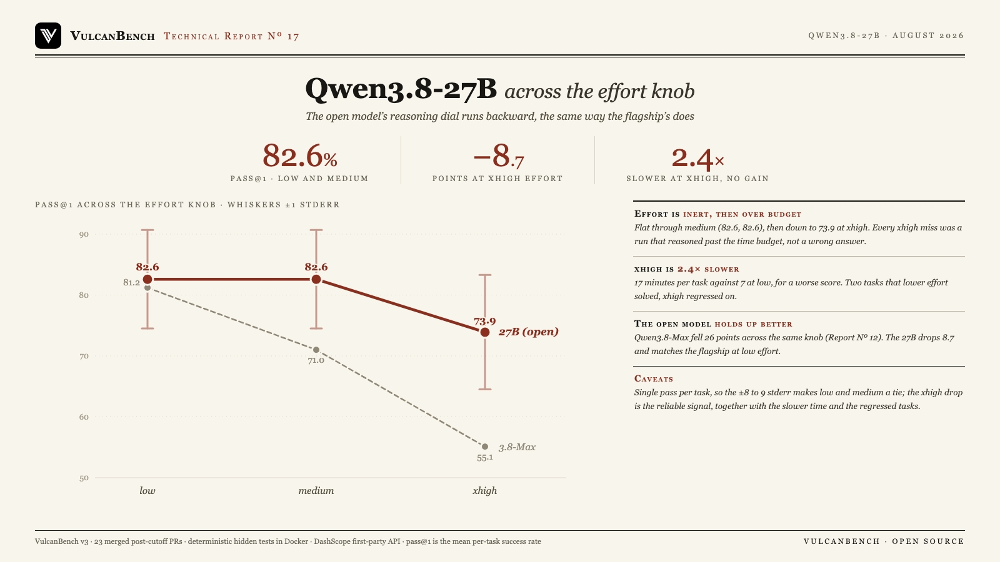

Turning up the reasoning dial does not help this model, and eventually hurts it. Qwen3.8-27B scores 82.6% pass@1 at both low and medium effort, then falls to 73.9% at xhigh: flat, then backward. The extra effort is not free time, either. xhigh runs a median 17 minutes per task against 7 at low, 2.4 times slower for a worse result. Every one of its failures is an unfinished run that reasoned past the time budget, not a wrong answer, including two tasks lower effort had solved in minutes. The shape echoes the flagship: Report No. 12 found Qwen3.8-Max running the same knob backward, 81.2% to 55.1%, a 26-point collapse. The open 27B is far more robust, dropping 8.7 points rather than 26, and it matches the flagship at low effort.

| Effort | pass@1 | Solved | Median time/task | Cost/task |
|---|---|---|---|---|
| low | 82.6% ±8.1 | 19/23 | 7.1 min | $0.71 |
| medium | 82.6% ±8.1 | 19/23 | 6.8 min | $0.48 |
| xhigh | 73.9% ±9.4 | 17/23 | 17.1 min | $0.69 |
One attempt per task per level (the reportable comparison).
Runs executed 2026-08-21 against DashScope’s first-party qwen3.8-27b endpoint, effort set via
reasoning_effort (the documented low/medium/xhigh enum; there is no “high”). The low level was
additionally run three times, whose mean is 76.8% ±8.2, so its single-pass 82.6% is a slightly lucky
draw and the true low-versus-medium gap is smaller still. pass@1 is the mean per-task success rate; times are medians and
include provider latency.
Effort is inert, then it runs out the clock. Low and medium tie at 82.6%; xhigh drops to 73.9%. The extra reasoning improved nothing, and the drop is not wrong answers: every one of the six xhigh failures was an unfinished run, cut off at its step or wall-clock budget, zero finished-but-wrong. xhigh did not make the model less accurate, it made it too slow to produce a patch in a fixed budget, the same “failures change kind” pattern Reports No. 12 and 14 found.
xhigh costs time for a worse result. A median 17.1 minutes per task at xhigh against 7.1 at low, 2.4 times slower. One task, pennylane-trotter-fragmented, ran the full 60-minute budget at xhigh and still failed, having been solvable at lower effort.
Higher effort ran two quick wins into the ground. flask-teardown-robust and semver-inc-dotted-prerelease were both solved in minutes at low and medium. At xhigh the model kept reasoning past 20 minutes and 70 to 120 steps and never shipped a finished patch on either, so both count as misses.
The open model is more robust than the flagship. Qwen3.8-Max lost 26 points across the same knob; the 27B loses 8.7. At low effort the open 27B (82.6%) matches the hosted Max (81.2%) on this suite.
Four tasks resist every setting. aiohttp-upgrade-deferred, networkx-leiden-communities, pennylane-trotter-fragmented, and sqlglot-canonicalize-internal-names go unsolved at low, medium, and xhigh alike.
| Model | low | medium | xhigh | low to xhigh |
|---|---|---|---|---|
| Qwen3.8-27B (open) | 82.6% | 82.6% | 73.9% | −8.7 |
| Qwen3.8-Max | 81.2% | 71.0% | 55.1% | −26.1 |
Both models run the knob backward, and xhigh is the shipped default for the family, so an untuned integration gets the worst setting on either. Report No. 12 measured the Max at three attempts per task; the direction, not the exact single-pass value, is the comparison.
This is a single-pass measurement, so the per-column standard errors are wide (±8 to 9 points) and low versus medium is a statistical tie. The reliable signals are the xhigh drop, the 2.4× slower runtime, and the two regressed tasks, which point the same direction. DashScope does not publish the serving quantization for the open 27B, so “the model” here means whatever Alibaba serves first-party, comparable to how Report No. 12 treated the Max.
Costs are unusually high for a small model because the 1M-token context window lets the agent re-send its full growing transcript every step with no truncation, and implicit caching did not engage; a local run of the same weights, capped at a 32K window, used a fraction of the tokens. The comparison to Report No. 12 spans a single-pass column against a three-pass one, so only the direction transfers, not the exact gap.
VulcanBench v3: 23 tasks from real merged post-cutoff PRs (Python 9, TypeScript 4, Rust 4, Go 3, JavaScript 3), graded
by deterministic hidden tests in Docker; model judges disabled. Runs executed 2026-08-21 against DashScope’s
international OpenAI-compatible endpoint (qwen3.8-27b), with reasoning_effort set to low, medium,
and xhigh. Each level is one attempt per task; the low level was run three times and reports its first attempt here for
symmetry, with the three-pass mean noted. pass@1 is the mean per-task success rate. A per-request ceiling of 1200 seconds
was applied so a single xhigh reasoning turn on a hard task is not cut off mid-thought; the run’s overall wall-clock
budget still bounds each task. This is the open-weights counterpart to Report No. 12’s
Qwen3.8-Max on the same suite and the same reasoning dial.
{kind=link}